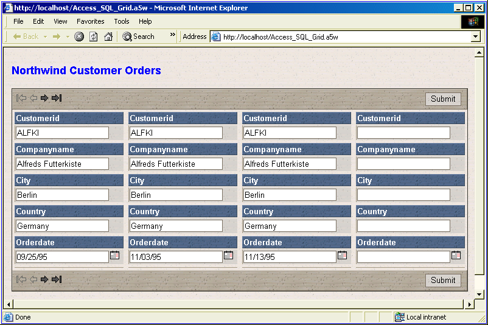

Creating a Grid for Microsoft Access Using the SQL Builder
Create a new grid component.
Display the Component Type page.
Leave the Grid Layout selection as "Stacked Columnar". This produces a multi-record view that looks like multiple forms arrayed in a grid, with field labels above fields.
Select the Updateable radio button.
Display the Grid > Data Source page.
Select the ADO/ODBC/Access radio button. The ADO/ODBC/Access button allows you to retrieve your data from Microsoft Access or a database that supports the ADO or ODBC interface standards.
Selecting the Records to Display
Display the Grid > Query (ADO) page.
Leave the Connection type selection as "Access Database".
Click
 to select the "Northwind" database in the MDB Filename field.
to select the "Northwind" database in the MDB Filename field.Click Connect. This opens the Access database so you can select the table or view that you want to use.
Select the SQL Select Statement radio button.
Click the Edit SQL button to display the <span class=Screen>SQL Builder</span> dialog box.
Click Tables in Query to display the Define Join dialog box.
Click Add Table to display the Add Table dialog box.
Select the "Customers (Table)" entry in the Tables list and click OK.
Click Add Table to display the Add Table dialog box.
Select the "Orders (Table)" entry in the Tables list and click OK.
Click Fields in View to display the Select Fields in View dialog box.
 Note : Since this grid is updateable, you must include both the fields that you wish to display plus the primary keys of the tables that contain these fields, even if you do not wish to display them.
Note : Since this grid is updateable, you must include both the fields that you wish to display plus the primary keys of the tables that contain these fields, even if you do not wish to display them.
Select the "Customers" table from the drop-down list.
Select the "CustomerID", "CompanyName", "City", "Country" fields and click
 .
.Select the "Orders" table from the drop-down list.
Select the "OrderDate" and "OrderID" fields and click
.Click OK > OK to continue.
Leave the Read only check box cleared.
Click Select Primary Key(s) to display the Specify Primary Keys dialog box.
Select the "Customers" table from the Tables list.
Check the "CustomerID" field.
Select the "Orders" table from the Tables list.
Check the "OrderID" field.
Click OK to continue.
Selecting the Fields to Display
Display the Grid > Fields page.
Leave the Grid is editable check box unchanged. Although a grid starts out as updateable, it can still be read only. This has the virtue of using text boxes instead of labels to represent the data in the grid, which in turn provides more reliable formatting alternatives, as well as the ability to copy data from the fields.
In the Available Fields list select "Customerid" through "Orderdate" and click
.
Display the Grid > Properties page.
Click
 to display the Select style dialog.
to display the Select style dialog.Select "TeaCup" and click OK. You can add new styles or modify existing styles.
Change the Layout Options > Repeating columns field value to "4".
Change the Layout Options > Snaking style field value to "LRTB".
 Note : With the Stacked Columnar grid style, the Layout Options > Rows of data field actually specifies the number of forms to display. Since the Layout Options > Repeating columns field value is "4" and the Permissions > Number of new record rows on the Grid > Update Settings page will be set to "1", this field value will be set to "3" ( 4 - 1 = 3).
Note : With the Stacked Columnar grid style, the Layout Options > Rows of data field actually specifies the number of forms to display. Since the Layout Options > Repeating columns field value is "4" and the Permissions > Number of new record rows on the Grid > Update Settings page will be set to "1", this field value will be set to "3" ( 4 - 1 = 3).
Change the Layout Options > Rows of data field value to "3".
Click the Layout Options menu to collapse it.
Click the Shading and Dividers menu to collapse it.
Click the Column Titles and Sorting Options menu to collapse it.
Click the
 button in the Record Navigator > Record navigator layout field to display the Record Navigator Designer dialog box. You can modify the default navigator styles or create new navigator styles.
button in the Record Navigator > Record navigator layout field to display the Record Navigator Designer dialog box. You can modify the default navigator styles or create new navigator styles.Select the Pre-Defined Format and click OK.
Change the Record Navigator > Record navigator position field to "Above and Below Grid".
Click the Record Navigator menu to collapse it.
Click the
button in the Customization > 'Total records' message text field to display the HTML Editor.Display the Source tab.
Erase all the HTML code and click Save.
Click the Customization menu to collapse it.
Click the
button in the Freeform Edit Regions > Above Grid field to display the HTML Editor.Enter and format "Northwind Customer Orders".
Click Save.
Click Save.
Display the Grid > Update Settings page.
Clear the Permissions > Allow delete check box.
Change the Permissions > Number of new record rows to "1".
The first stage of previewing your work is to create a page onto which to place the new component.
Click
 to preserve your work. Name it "Access_SQL_Grid".
to preserve your work. Name it "Access_SQL_Grid".Click Close to return to the Web Projects Control Panel.
Click
 on the toolbar.
on the toolbar.Select Alpha Five Web Page > OK to open the HTML Editor.
Click File > Save As. Name the page "Access_SQL_Grid" and click OK.
The next stage is to place the component on the page.
Click
 Insert Component to display the Insert Component dialog.
Insert Component to display the Insert Component dialog.Click Select to display the Select Component dialog.
Select "Access_SQL_Grid" and click OK.
Change the component Alias to "ASG" and click OK. This makes the code that Alpha Five generates in the background more compact, but the main benefit is it allows you to transparently replace the component with another component with the same alias.
Click
and close the HTML Editor.Next, publish the files to the local webroot. The local webroot is presumably the location where you will test your website. In most cases you will create a second profile (in this case "AlphaSports") where you will publish your finished public website.
Display the A5W Pages page of the Web Projects Control Panel.
Right click "Access_SQL_Grid" and select Publish (local webroot) and open. You should see something like the following.

See Also